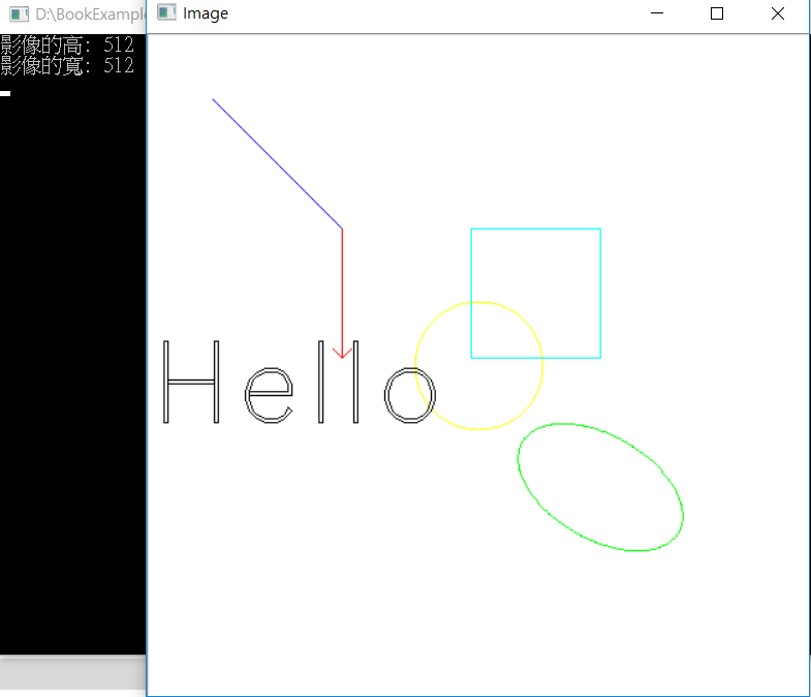

3-2加入形狀
程式說明:
運行結果:
將影像加一些形狀和文字。

範例程式:
#include <iostream>
#include <opencv2/opencv.hpp>
#include <opencv2/highgui/highgui.hpp>
int main(int argc, char** argv)
{
cv::Mat img = cv::Mat(512,512,CV_8UC3,cv::Scalar(255,255,255));
cv::namedWindow("Image");
std::cout << "影像的高: " << img.rows << std::endl;
std::cout << "影像的寬: " << img.cols << std::endl;
//畫線
cv::Point p1(50, 50);
cv::Point p2(150, 150);
cv::Scalar s1(255, 0, 0); //B
cv::line(img, p1,p2,s1);
//畫箭頭線
cv::Point p3(150, 150);
cv::Point p4(150, 250);
cv::Scalar s2(0, 0, 255); //R
cv::arrowedLine(img, p3, p4, s2);
//畫圓
cv::Point center(256, 256);
cv::Scalar s3(0, 255, 255);
cv::circle(img, center, 50, s3);
//畫方
cv::Point p5(250, 150);
cv::Point p6(350, 250);
cv::Scalar s4(255, 255, 0);
cv::rectangle(img, p5, p6, s4);
//畫橢圓
cv::ellipse(img, cv::Point(350, 350), cv::Size(70, 40), 30, 0, 360, cv::Scalar(0, 255, 0));
//寫文字
cv::putText(img, "Hello", cv::Point(0, 300), 2, 3, cv::Scalar(0, 0, 0));
//顯示影像
cv::imshow("Image", img);
cv::waitKey(0);
//將影像存成不同的格式ex: jpg
cv::imwrite("out.jpg", img);
return 0;
}